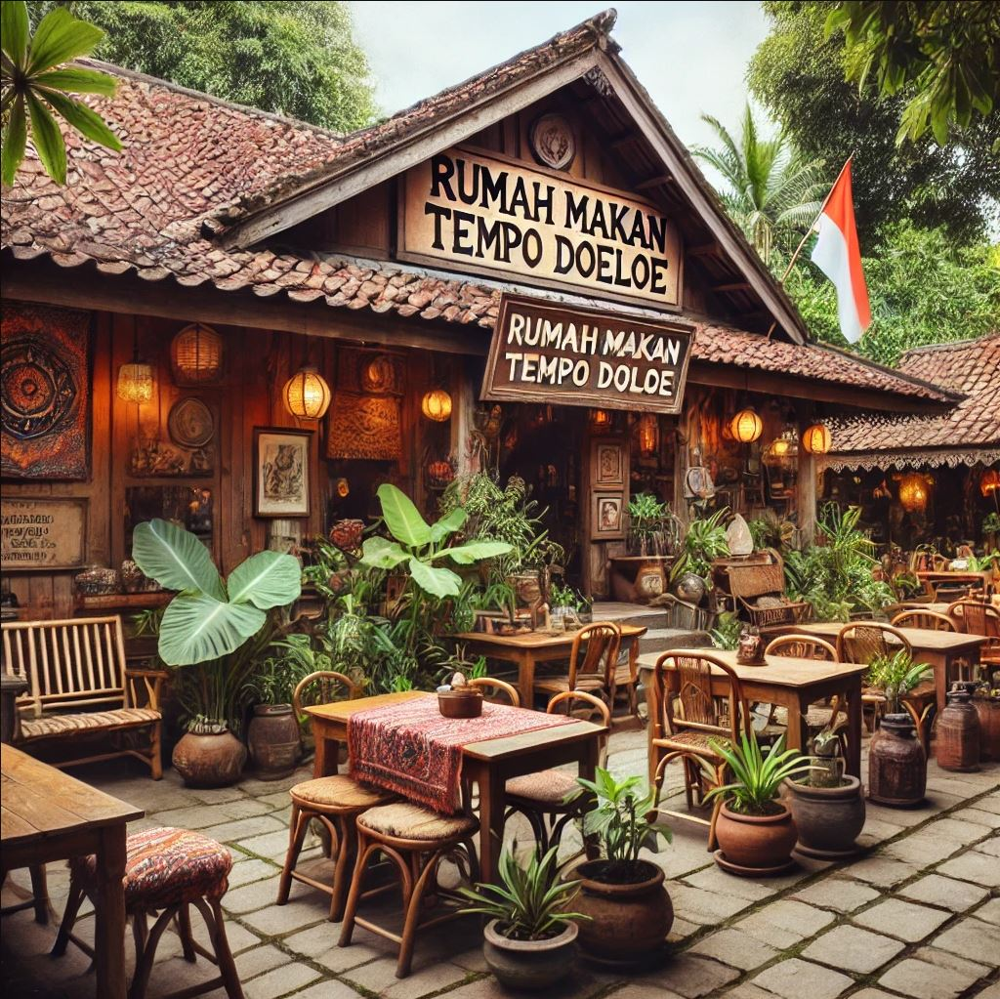

Cerita
Solo, atau Surakarta, memiliki warisan kuliner yang kaya, dan rumah makan tempo doeloe di kota ini merupakan cerminan dari sejarah panjang tradisi makan masyarakat Jawa. Rumah makan tradisional khas Solo sering kali berawal dari warung kecil keluarga yang diwariskan turun-temurun. Sejak zaman kolonial Belanda, rumah makan ini menjadi tempat berkumpulnya masyarakat, baik dari kalangan rakyat biasa hingga kaum priyayi (bangsawan Jawa). Hidangan yang disajikan di rumah makan tempo doeloe Solo mencerminkan akulturasi budaya lokal dengan pengaruh Tionghoa dan Belanda, tetapi tetap mempertahankan rasa dan teknik memasak tradisional Jawa. Beberapa rumah makan legendaris di Solo, seperti Warung Selat Mbak Lies atau Timlo Sastro, telah ada sejak puluhan tahun lalu dan masih setia menyajikan hidangan khas seperti selat solo, timlo, dan nasi liwet. Rumah makan ini tidak hanya menawarkan makanan, tetapi juga pengalaman nostalgia yang kental dengan nuansa tempo dulu, lengkap dengan dekorasi yang khas dan pelayanan yang ramah.